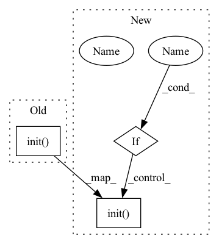

Pattern ID :32167
Before Change
num_training_steps=max_steps)
def fit(self, logger, log_interval=10):
wandb.init(project="Coati", name=time.strftime("%Y-%m-%d %H:%M:%S", time.localtime()))
wandb.watch(self.model)
total_loss = 0
// epoch_bar = tqdm(range(self.epochs), desc="Epochs", disable=not is_rank_0())
step_bar = tqdm(range(len(self.train_dataloader) // self.accimulation_steps * self.max_epochs),After Change
num_training_steps=max_steps)
def fit(self, logger, use_wandb: bool = False):
if use_wandb :
wandb.init(project="Coati", name=time.strftime("%Y-%m-%d %H:%M:%S", time.localtime()))
wandb.watch(self.model)
total_loss = 0
// epoch_bar = tqdm(range(self.epochs), desc="Epochs", disable=not is_rank_0())
step_bar = tqdm(range(len(self.train_dataloader) // self.accimulation_steps * self.max_epochs),In pattern: SUPERPATTERN
Frequency: 3
Non-data size: 3
Instances Fragment ID: 94124796
Project Name: hpcaitech/colossalai
Commit Name: 2a951955ade14fd067bc5bee34a5ff7e57513ac6
Time: 2023-04-26
Author: lhx0217@gmail.com
File Name: applications/Chat/coati/trainer/sft.py
M Class Name: SFTTrainer
N Class Name: SFTTrainer
M Method Name: fit(3)
N Method Name: fit(3)
M Parent Class: Trainer
N Parent Class: Trainer
M File Name: applications/Chat/coati/trainer/sft.py
N File Name: applications/Chat/coati/trainer/sft.py
M Start Line: 73
M End Line: 114
N Start Line: 73
N End Line: 115
Before Change
provider_uri = config.get("provider_uri")
region = config.get("region")
qlib.init(provider_uri=provider_uri, region=region)
task_train(config, experiment_name=experiment_name)
After Change
provider_uri = config.get("provider_uri")
region = config.get("region")
if exp_manager :
qlib.init(provider_uri=provider_uri, region=region, exp_manager=exp_manager)
else:
qlib.init(provider_uri=provider_uri, region=region)
task_train(config, experiment_name=experiment_name)
Fragment ID: 94124792
Project Name: microsoft/qlib
Commit Name: f05df04320e2db30831167efe602182038c1fda8
Time: 2020-11-27
Author: dw1920@nyu.edu
File Name: qlib/workflow/cli.py
M Class Name: AnonimousClass
N Class Name: AnonimousClass
M Method Name: workflow(3)
N Method Name: workflow(2)
M Parent Class:
N Parent Class:
M File Name: qlib/workflow/cli.py
N File Name: qlib/workflow/cli.py
M Start Line: 53
M End Line: 53
N Start Line: 44
N End Line: 58
Before Change
def init(self, **kwargs):
Initialize the DatasetH, Only parameters belonging to handler.init will be passed in
self.handler.init(**kwargs)
def setup_data(self, handler: Union[dict, DataHandler], segments: dict):
Setup the underlying data.After Change
Config of segments which is same as "segments" in DatasetH.setup_data
if handler_kwargs :
if not isinstance(handler_kwargs, dict):
raise TypeError(f"param handler_kwargs must be type dict, not {type(handler_kwargs)}")
kwargs_init = {}
kwargs_conf_data = {}
conf_data_arg = {"instruments", "start_time", "end_time"}
for k, v in handler_kwargs.items():
if k in conf_data_arg:
kwargs_conf_data.update({k:v})
else:
kwargs_init.update({k:v})
self.handler.conf_data(**kwargs_conf_data)
self.handler.init(**kwargs_init)
if segment_kwargs:
if not isinstance(segment_kwargs, dict):
raise TypeError(f"param handler_kwargs must be type dict, not {type(segment_kwargs)}") Fragment ID: 94124793
Project Name: microsoft/qlib
Commit Name: 4ed8b8e233435c641fa584fd86e43ef89f5b8e7b
Time: 2021-02-04
Author: bxd98@126.com
File Name: qlib/data/dataset/__init__.py
M Class Name: DatasetH
N Class Name: DatasetH
M Method Name: init(3)
N Method Name: init(1)
M Parent Class: Dataset
N Parent Class: Dataset
M File Name: qlib/data/dataset/__init__.py
N File Name: qlib/data/dataset/__init__.py
M Start Line: 90
M End Line: 92
N Start Line: 90
N End Line: 127